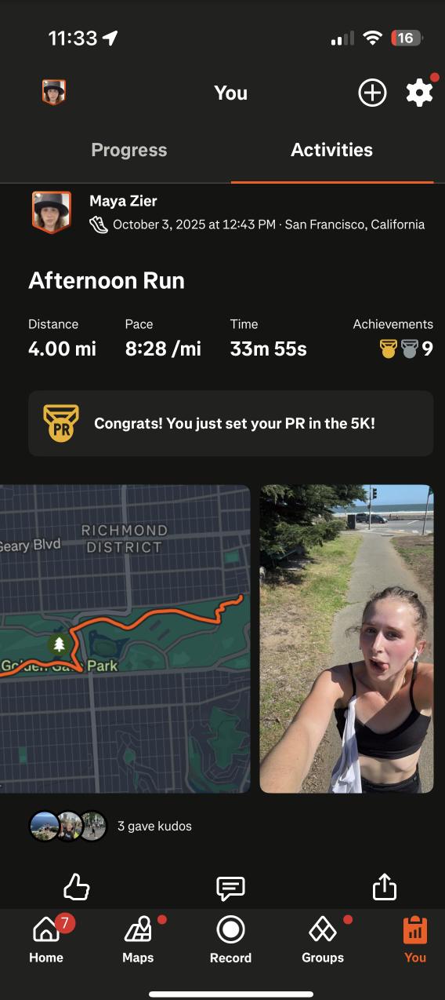
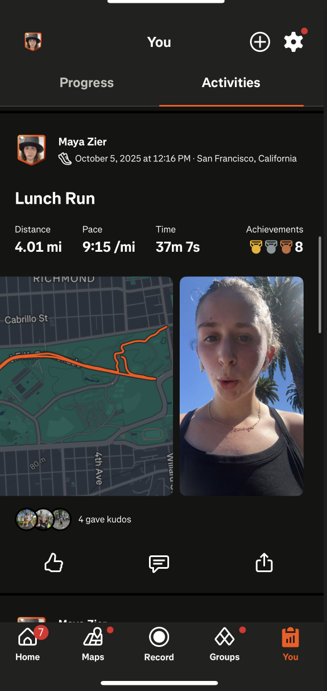
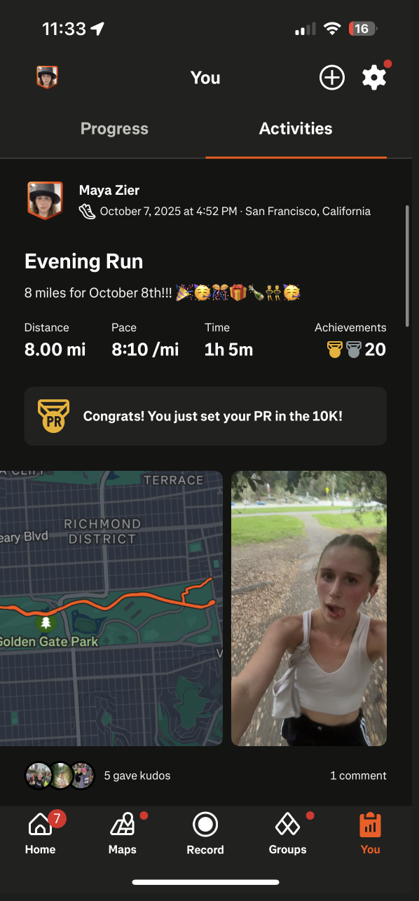
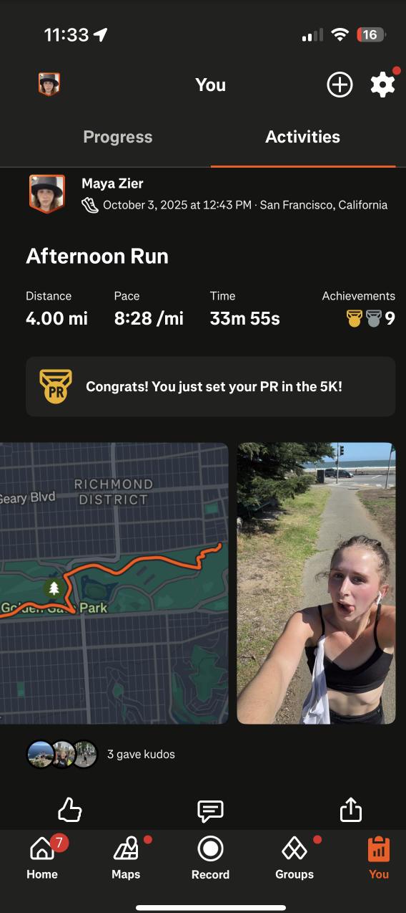
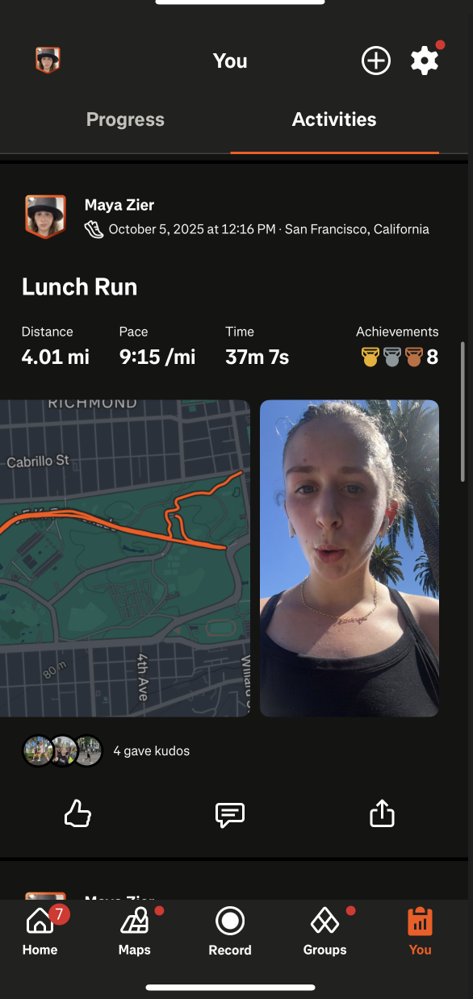
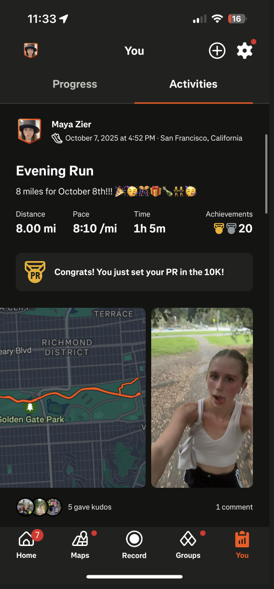
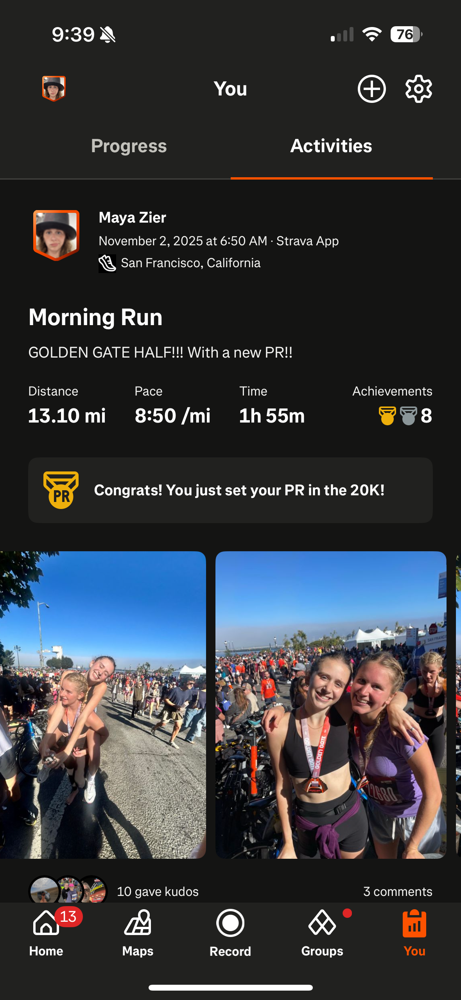
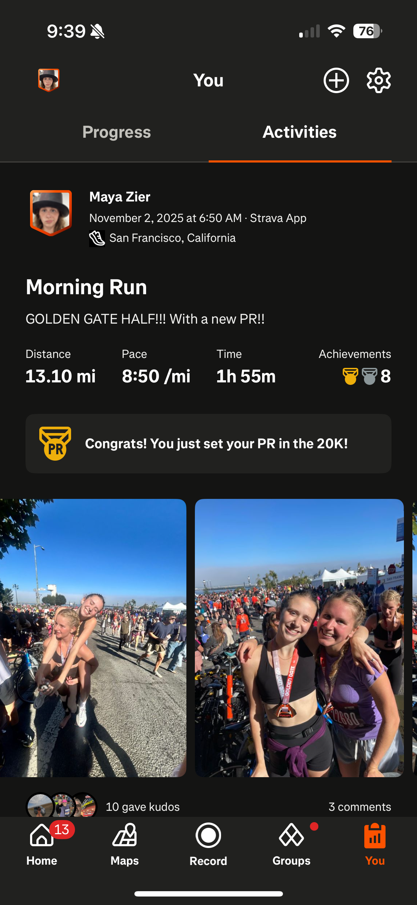

 



Strava is more than a GPS tracker, it’s a vibrant community that motivates and connects runners. I can track my runs, see my pace, elevation changes and distance covered. I can also compare my performance on certain segments with other athletes. Strava has over 100 million users worldwide and hosts thousands of challenges every month, enabling me to set goals and push myself further. It helps me discover new routes, celebrate personal records and connect with fellow runners who inspire me to keep improving. It is not just a tracking tool but also a brilliant way to turn every run into a shared experience which motivates me to go further and run smarter.